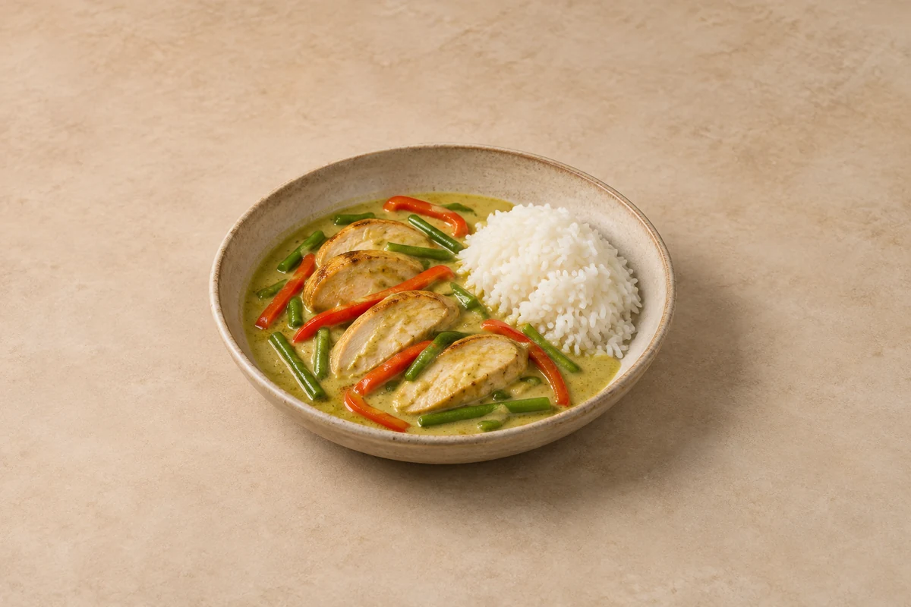

Jalfrezi Curry
Uses prepared base gravy and pre-cooked main ingredients.
Curries
A simple green or red Thai curry made with Mae Ploy paste, chicken breast and coconut milk. Serves 2.
Time to allow: 35 min total
Ingredient quantities update automatically

Cool rice as quickly as possible, ideally within 1 hour, and refrigerate in shallow portions. Eat the rice, and any leftovers mixed with it, within 24 hours. Keep other cooked components separate and use within 48 hours. Keep the curry and rice separate.
Freeze suitable cooled components separately for up to 2 months for best quality. If freezing freshly cooked rice, cool it quickly and freeze within 1 hour. Defrost in the fridge and use within 24 hours. Coconut milk may separate slightly; stir it together as the curry heats.
Reheat rice only once until steaming hot throughout and eat immediately. Heat other cooked components thoroughly, keeping cold toppings separate. Warm the curry gently while checking the chicken is hot in the centre.
Keep chicken breast and Mae Ploy green or red paste as written. Reduce paste for less heat rather than adding extra sugar. Tofu and vegetarian curry paste make a different meat-free variation; many pastes contain shrimp.
Rice needs faster cooling: cool quickly, ideally within 1 hour, and refrigerate; use within 24 hours. If freezing freshly cooked rice, cool it quickly and freeze within 1 hour. Defrost in the fridge and use within 24 hours. Reheat only once until steaming hot throughout and eat immediately. Do not heat rice again if it was already reheated, including a heated microwave pouch. Keep the fridge at 0–5°C and the freezer around −18°C.
Food-safety guidance: Food Standards Agency: chilling and freezing · reheating leftovers · cooked rice.